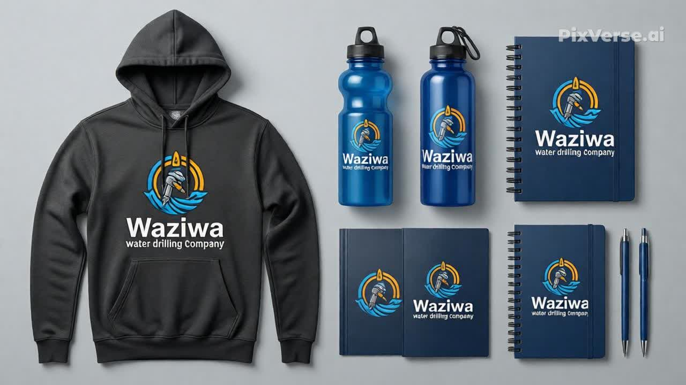

+254732437459 | +254706366041
info@Jaguar Drillers.com

Waziwa Drilling Co Ltd is an established Borehole Drilling-Firm based in Nairobi city, Republic of Kenya. This firm is run by well experienced people since 2008. Jaguar has completed more than 100 hundred Boreholes for Domestic, Industrial and Agriculture requirements in and around Kenya.
Waziwa drilling company is known worldwide for cheap service of high quality. If you really need an outstanding service the best drilling company to work with is Waziwa drilling company. We offer a service like no other. We also offer employment to our youths and pay reasonable salary that caters for their needs. To seek employment opportunity visit our contact page and contact us and fill the forms there.
To improve the well being of people by providing cheap water to societies
To contribute to the well being of kenyan citizens and improve their living standards by providing clean water and offering employment opportunies to them.
SKY IS THE LIMIT
We offer hoodies, water bottles,pens and books to our customers for marketing purposes .If you need any of the above items contact us via our social media platforms. We will be very ready and willing to serve you. Here is an image of the above items:
